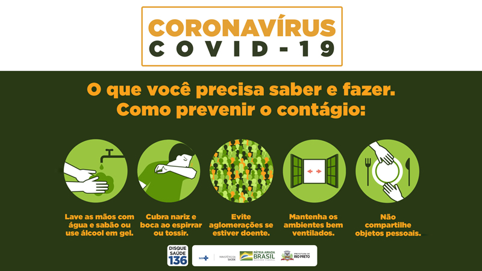

A nova Covid-19 está se espalhando rapidamente, então é importante que todas as pessoas (sem excessões) sigam as medidas preventivas contra o vírus. Como se previnir?
É importante a lavagem das mãos sempre que voltar para casa, por pelo menos 20 segundos e esfregar os espaços entre os dedos, o dorso da mão e cavidades (dobras dos dedos e unhas), onde as bactérias podem se alojar, sem esquecer do polegar.
Evite contato com pessoas doentes e aglomerações com famílias.
Fique em casa se estiver doente, você estará ajudando a si mesmo e o próximo.
Se tossir ou espirrar é necessário que cubra a boca e o nariz.
Se precisar sair para comprar comida ou remédio, use sua máscara segundo Ministério da saúde a utilização de máscara diminuem a disseminação do virus por gotículas expelidas do nariz ou boca. Logo desinfete seus produtos.
O ideal é que faça compras online se for possível, não ter contato físico com o entregador.